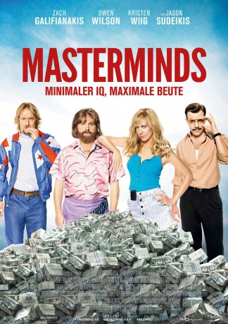
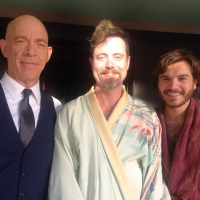

#6288 Masterminds
 gesehen am 17.06.2017
gesehen am 17.06.2017
 
 IMDB-Wertung: 5.8 / 10
IMDB-Wertung: 5.8 / 10  Tomatometer: 33
Tomatometer: 33  Metascore: 0
Metascore: 0 
Steve (Owen Wilson) arbeitet als Nachtwächter im Süden der USA bei einer Firma, die Unternehmen gepanzerte Trucks für Transport-Dienste zur Verfügung stellt. Vor allem dienen die Wagen als Geldtransporter. David (Zach Galifianakis) ist einer der Männer, die für Banken Unsummen an Dollars von A nach B fahren. Diese Aufgabe ist allerdings weitaus weniger spannend, als sie sich anhört, und so ist Davids Tageshöhepunkt nicht das Verladen der Millionen, sondern der tägliche Flirt mit seiner Kollegin Kelly (Kristen Wiig). Das Abenteuer hält erst in Davids Leben Einzug, als Kelly ihn für einen kriminellen Plan gewinnen will: Steve und ein paar andere unerfahrene Kriminelle (inklusive Auftragskiller Jason Sudeikis) haben es sich in den Kopf gesetzt, beim größten je dagewesenen Bankraub der Vereinigten Staaten 17 Millionen Dollar zu entwenden. Auf einmal hat David lauter neue Freunde, aber auch jede Menge Ärger am Hals…
Jahr: 2016
Dauer: 94 Minuten
FSK: 12
Land: USA Studio: Relativity MediaTonspuren: DTS - ,
Untertitel: Deutsch, Englisch,
Auflösung: 1080p (1920x1080) Größe: 6307 MB
Genre: Action, Komödie, Krimi
Regisseur: Jared Hess
Drehbuch: Morton S. Fine
Soundtrack:
Darsteller:
 Zach Galifianakis als David Ghantt
Zach Galifianakis als David Ghantt Kristen Wiig als Kelly
Kristen Wiig als Kelly Owen Wilson als Steve
Owen Wilson als Steve- Ross Kimball als Eric Payne
 Jason Sudeikis als Mike McKinney
Jason Sudeikis als Mike McKinney Devin Ratray als Runny
Devin Ratray als Runny- Mary Elizabeth Ellis als Michelle Chambers
 Kate McKinnon als Jandice
Kate McKinnon als Jandice Leslie Jones als Scanlon
Leslie Jones als Scanlon-  Jon Daly als Plewe
 Ken Marino als Doug Jeffcoat
Ken Marino als Doug Jeffcoat Daniel Zacapa als Quintero
Daniel Zacapa als Quintero- Candace Blanchard als Cathy Jeffcoat
- Karsten Friske als Cort Chambers
 Barry Ratcliffe als Corrections Officer
Barry Ratcliffe als Corrections Officer- Laura Palka als Reporter
- Wynn Reichert als Matthew, Photographer
 Jill Jane Clements als Beryl
Jill Jane Clements als Beryl- Jee An als Female Cashier at Airport
 Rhoda Griffis als Real Estate Agent
Rhoda Griffis als Real Estate Agent- Nicole Michele Sobchack als Reporter #2
 Matt Corboy als Boss
Matt Corboy als Boss Jay Amor als Quintero Man #2 , uncredited
Jay Amor als Quintero Man #2 , uncredited- Mandi Beers als Big Nosed Woman , uncredited
- J. William Brown als Department Store Shopper , uncredited
 Miller Carbon als Party Guest , uncredited
Miller Carbon als Party Guest , uncredited- John Carter als News Camera Man , uncredited
 James Coburn als Derek Flint , archive footage, uncredited
James Coburn als Derek Flint , archive footage, uncredited- Danny Comden als Chad , uncredited
- Jason Michael Elliott als Airport Passenger , uncredited
- Cameron Feimster als Upscale Party Guest , uncredited
 Willie Tyrone Ferguson als Airport Traveler- US , uncredited
Willie Tyrone Ferguson als Airport Traveler- US , uncredited- Christopher Donald Gallagher als Prisoner , uncredited
 Fred Galle als Upscale Party Guest , uncredited
Fred Galle als Upscale Party Guest , uncredited- Josué Gutierrez als Banamex Teller , uncredited
 Jim Keisler als Upscale Party Guest , uncredited
Jim Keisler als Upscale Party Guest , uncredited- Corey Maher als FBI Agent , uncredited
- Gabriel Manak als Catering Assistant , uncredited
 Chris Matheny als Loomis-Fargo Shift Supervisor , uncredited
Chris Matheny als Loomis-Fargo Shift Supervisor , uncredited- Robert McRary als Prisoner , uncredited
- Brenda Moss-Clifton als Shopper , uncredited
- Kevin J. O'Connor als Upscale Party Guest , uncredited
 Diezel Ramos als Correctional Officer , uncredited
Diezel Ramos als Correctional Officer , uncredited- William Cowboy Reed als Prisoner , uncredited
- David N. Russell als Party Guest , uncredited
- Marlo Scheitler als Airport Traveler, Cancun , uncredited
- Ron Stafford als Upscale Party Guest , uncredited
 Kelly Tippens als Big Nosed Woman #2 , uncredited
Kelly Tippens als Big Nosed Woman #2 , uncredited- Tom Werme als Anchorman
- Njema Williams als Ty
Datei: X:\2016(G-M)\Masterminds (2016, FSK12, 1920x1080).mkv seit 01.06.2017
Festplatte: HD 2016(A-Z)
 Es gibt insgesamt 164 Filme in der Gruppe '2016(G-M)'
Es gibt insgesamt 164 Filme in der Gruppe '2016(G-M)'